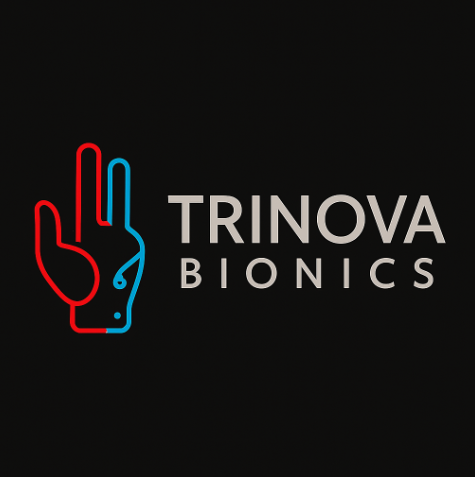

Cada persona merece romper las barreras físicas y reclamar la plenitud de su potencial[cite: 2].
[cite_start]Nuestra misión es integrar arte, ciencia y tecnología para crear prótesis que sean sinónimo de esperanza y libertad[cite: 4].
Ver Proyecto
Ser referentes a nivel mundial en la creación de prótesis que trasciendan lo funcional para convertirse en extensiones de la identidad personal y el espíritu innovador[cite: 15].
Democratizar el acceso a prótesis de alta calidad, contribuyendo a la reinserción social y laboral, impulsando la inclusión[cite: 20].
Incorporar tecnologías de control adaptable e interfaces inteligentes que se integren con sensores biométricos para una interacción más natural[cite: 17].
Generar prótesis en masa para abarcar una clientela aún mayor, haciendo el producto accesible y competitivo[cite: 18, 38].
El mercado tradicional se enfoca en dispositivos estándar, voluminosos y con ergonomía limitada[cite: 7, 33]. [cite_start]Los usuarios enfrentan desafíos por el peso, la falta de precisión y una desconexión emocional con la estética del producto[cite: 8].
TriNova Bionics se diferencia por ser la única con la característica de controlarse mediante **comandos de voz** [cite: 31][cite_start], superando la tecnología confinada de las soluciones existentes[cite: 34].
[cite_start]Además, integramos elementos estéticos inspiradores que conectan emocionalmente con el usuario, algo ausente en la mayoría del mercado[cite: 36, 37].